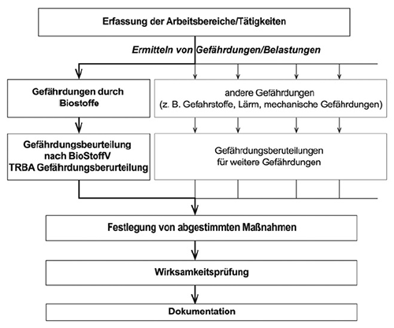

(1) Der Arbeitgeber ist nach § 5 Arbeitsschutzgesetz (ArbSchG) verpflichtet, die Arbeitsbedingungen seiner Beschäftigten daraufhin zu beurteilen, ob deren Gesundheit oder Sicherheit gefährdet ist. Ziel dieser Gefährdungsbeurteilung ist es zu ermitteln, welche Maßnahmen getroffen werden müssen, um die festgestellten Gefährdungen der Beschäftigten zu verhindern. Die Verantwortung für die korrekte Durchführung der Gefährdungsbeurteilung liegt beim Arbeitgeber.
(2) Am Arbeitsplatz können neben Biostoffen gleichzeitig weitere unterschiedliche Belastungen oder Gefährdungen bestehen. Diese sind getrennt zu erfassen und zu beurteilen. Die Schutzmaßnahmen sind darauf abzustimmen und müssen alle Gefährdungen berücksichtigen (siehe Abbildung 1).

Abbildung 1: Gefährdungen durch Biostoffe als Teil der Beurteilung der Arbeitsbedingungen nach § 5 Arbeitsschutzgesetz
(3) Der Arbeitgeber kann für seine Gefährdungsbeurteilung die Vorgaben dieser TRBA entsprechend § 4 BioStoffV verwenden, soweit die hier beschriebenen Tätigkeiten und Expositionsbedingungen sich auf die konkret zu beurteilende Situation übertragen lassen. Bei einer fehlenden oder unzutreffenden Übertragbarkeit sind die entsprechenden Tätigkeiten und die damit verbundenen Gefährdungen entsprechend der TRBA 400 "Handlungsanleitung zur Gefährdungsbeurteilung und für die Unterrichtung der Beschäftigten bei Tätigkeiten mit biologischen Arbeitsstoffen" zu beurteilen [19].
(4) Werden Beschäftigte mehrerer Arbeitgeber an einem Arbeitsplatz tätig oder werden bestimmte Tätigkeiten im Betrieb an Fremdfirmen vergeben, sind die jeweiligen Arbeitgeber nach § 8 ArbSchG verpflichtet, bei der Durchführung der Sicherheits- und Arbeitsschutzbestimmungen zusammenzuarbeiten. Eine gegenseitige Information über die mit den Arbeiten verbundenen Gefahren für Sicherheit und Gesundheit der Beschäftigten ist erforderlich. Ggf. ist die Gefährdungsbeurteilung gemeinsam durchzuführen und insbesondere die Durchführung von Schutzmaßnahmen abzustimmen. Der Arbeitgeber muss sich je nach Art der Tätigkeit vergewissern, dass die Beschäftigten anderer Arbeitgeber hinsichtlich der Gefahren für ihre Sicherheit und Gesundheit angemessene Anweisungen in der für sie verständlichen Sprache erhalten haben.
(5) Bei einer Arbeitnehmerüberlassung trifft die Pflicht zur einsatz- und betriebsspezifischen Unterweisung den Entleiher. Er hat die Unterweisung unter Berücksichtigung der Qualifikation und der Erfahrung der Personen, die ihm zur Arbeitsleistung überlassen werden, vorzunehmen. Die sonstigen Arbeitsschutzpflichten des Verleihers bleiben unberührt.
(1) Die Gefährdungsbeurteilung nach der Biostoffverordnung muss fachkundig erfolgen. Verfügt der Arbeitgeber nicht selbst über die entsprechenden Kenntnisse, hat er sich fachkundig beraten zu lassen. Regelungen zur erforderlichen Fachkunde enthält die TRBA 200 "Anforderungen an die Fachkunde nach Biostoffverordnung" (Abschnitt 3.1).
(2) Nach § 4 Absatz 2 BioStoffV ist die Gefährdungsbeurteilung mindestens jedes zweite Jahr zu überprüfen, bei Bedarf zu aktualisieren und das Ergebnis zu dokumentieren. Aktualisierungsanlässe sind:
(3) Bei der Gefährdungsbeurteilung sind auch Tätigkeiten zu berücksichtigen, die nur selten oder anlassbezogen durchgeführt werden. Dazu zählen beispielsweise Wartungs-, Reparatur- oder Instandhaltungsarbeiten.
(4) Tätigkeiten im Geltungsbereich dieser TRBA müssen keiner Schutzstufe zugeordnet werden und werden darum auch als Nicht-Schutzstufentätigkeiten bezeichnet (§ 6 BioStoffV).
(5) In der Gefährdungsbeurteilung sind entsprechend der ermittelten spezifischen Gefährdungen arbeitsmedizinische Fragestellungen zu beachten und zu beurteilen.
(6) Das Spektrum der in Abfällen vorkommenden Biostoffe variiert in Abhängigkeit von Art, Herkunft und Aufarbeitung der Abfälle. Hierbei können die Expositionsverhältnisse zeitlich starken Schwankungen unterliegen und auch räumlich sehr unterschiedlich sein und z.B. vom Arbeitsbereich, Arbeitsverfahren, Arbeitsmanagement und Hygienezustand des Arbeitsplatzes abhängen. Entsprechend kann ein breites Spektrum an sensibilisierenden, toxischen und infektiösen Wirkungen auf den Menschen auftreten.
(7) Als Aufnahmepfade können Atemwege, Mund sowie Haut- bzw. Schleimhaut in Frage kommen. Es besteht zudem die Gefahr von verletzungsbedingten Infektionen, da z.B. auch weggeworfene, gebrauchte Spritzen und Kanülen in Haushaltsabfällen vorzufinden sind.
(8) Aufgrund dieser komplexen Gefährdungssituation hat der Arbeitgeber für eine fachkundige Durchführung der Gefährdungsbeurteilung arbeitsmedizinischen Sachverstand einzubeziehen (vgl. AMR 3.2). Dem Arzt sind alle erforderlichen Auskünfte über die Arbeitsplatzverhältnisse zu erteilen und die Begehung des Arbeitsplatzes zu ermöglichen.
(1) Bei Tätigkeiten im Anwendungsbereich dieser TRBA kommen Beschäftigte mit Materialien und Gegenständen in Kontakt, die Biostoffe enthalten bzw. denen diese Stoffe anhaften. Dabei kann eine Vielzahl von Bakterien (u. a. Aktinomyzeten bei den Prozessen der Kompostierung), Schimmelpilzen und Viren freigesetzt werden. Insbesondere organische Abfälle, Abfälle mit organischen Bestandteilen bzw. Abfälle mit organischen Anhaftungen sind Träger von Biostoffen.
(2) Die auftretenden Biostoffe sind im Einzelnen der Art, Menge und Zusammensetzung nach nicht bekannt. Bakterien und Schimmelpilze vermehren sich auf Grund der Umweltbedingungen bzw. prozessbedingt im Abfall. Die Konzentration und das Artenspektrum sind abhängig von der Art des Abfalls, vom Zustand des Materials, vom Arbeitsbereich bzw. vom Verfahrensschritt. Es kommt zu einer mikrobiellen Mischexposition der Beschäftigten, wobei die Expositionsverhältnisse zeitlich und räumlich starken Schwankungen unterliegen. Die vorhandenen Biostoffe können bei den Beschäftigten Infektionen, Sensibilisierungen und toxische Wirkungen hervorrufen.
(3) Eine Verbreitung der Biostoffe und eine Übertragung auf die Beschäftigten ist unter anderem möglich durch:
Für die Bewertung möglicher Gefährdungen sind die Aufnahme von Biostoffen über den Atemtrakt, Hand-Mund-Kontakte, Haut-/Schleimhautkontakte sowie Schnitt- und Stichverletzungen relevant.
(4) Die Gefährdung durch Biostoffe wird bei der Abfallbehandlung maßgeblich bestimmt durch das Auftreten von Biostoffen der Risikogruppen 1 und 2. In den zu behandelnden Abfällen können durch Störstoffe (z. B. Tierkadaver) oder durch Abfälle aus Krankenhäusern, Arztpraxen oder Haushaltungen mit Kranken bzw. Pflegebedürftigen auch infektiöse Materialien mit Biostoffen der Risikogruppe 3 vorhanden sein (z. B. durch benutzte Spritzen und Kanülen) [4]. Auch durch Nagetiere, Vögel oder andere Tiere und durch deren Exkremente können Biostoffe der Risikogruppe 3 eingetragen werden [5]. Das Vorhandensein von Biostoffen der Risikogruppe 3 ist ein zeitweiliges Ereignis. Das Infektionsrisiko wird bei Einhaltung der hier dargestellten Maßnahmen als gering eingeschätzt.
(5) Die möglichen sensibilisierenden Wirkungen gehen in erster Linie von Schimmelpilzen und Aktinomyzeten aus. Nur von wenigen Pilzen sind bisher allergene Wirkungen eindeutig beschrieben worden. Längerfristiger, intensiver Kontakt mit luftgetragenen Schimmelpilzen in großer Dichte kann jedoch bei den exponierten Beschäftigten zur Herausbildung einer Überempfindlichkeit gegenüber Schimmelpilzen führen (Sensibilisierung, Allergisierung). Sensibilisierte Personen können bei Exposition schwerwiegende allergische Reaktionen erleiden, z. B. Schleimhautschwellungen oder Atemnotanfälle. Nach jahrelanger Arbeit in belasteten Bereichen von Kompostwerken wird eine gehäufte Entwicklung von chronischem Husten beobachtet [6].
(6) Mit dem Auftreten von Schimmelpilzen und Aktinomyzeten ist in der Regel bei allen Abfallarten im Anwendungsbereich dieser TRBA zu rechnen [7, 8, 9, 10, 11]. Von einer Freisetzung ist überall dort auszugehen, wo Abfälle bewegt oder behandelt werden. Informationen zur erwartbaren Höhe der Exposition gegenüber Schimmelpilzsporen in Arbeitsbereichen der Abfallwirtschaft finden sich in der Anlage 2. Weitere Informationen zur atemwegssensibilisierenden Wirkung von Schimmelpilzen und Aktinomyzeten finden sich in der TRBA/TRGS 406 "Sensibilisierende Stoffe für die Atemwege" [20].
(7) Die Gefährdung durch toxisch wirkende Biostoffe wird maßgeblich bestimmt durch Zellwandbestandteile abgestorbener Mikroorganismen wie z. B. Endotoxine von gramnegativen Bakterien und Glucane von Schimmelpilzen [13]. Im Geltungsbereich dieser Technischen Regel wird das potenzielle Risiko durch luftgetragene Endotoxine und Glucane als gering eingeschätzt. Toxische Wirkungen können auch von Schimmelpilzgiften ausgehen, sogenannten Mykotoxinen. Werden Tätigkeiten mit deutlich sichtbar verschimmelten Abfällen durchgeführt, sind akute toxische Wirkungen durch die inhalative Aufnahme von Mykotoxinen oder anderen mikrobiellen Stoffwechselprodukten möglich [14]. Für diese Situationen müssen zusätzlich Schutzmaßnahmen festgelegt werden.
(8) Die Schutzmaßnahmen dieser TRBA berücksichtigen insbesondere auch die sensibilisierenden oder toxischen Wirkungen von Biostoffen.